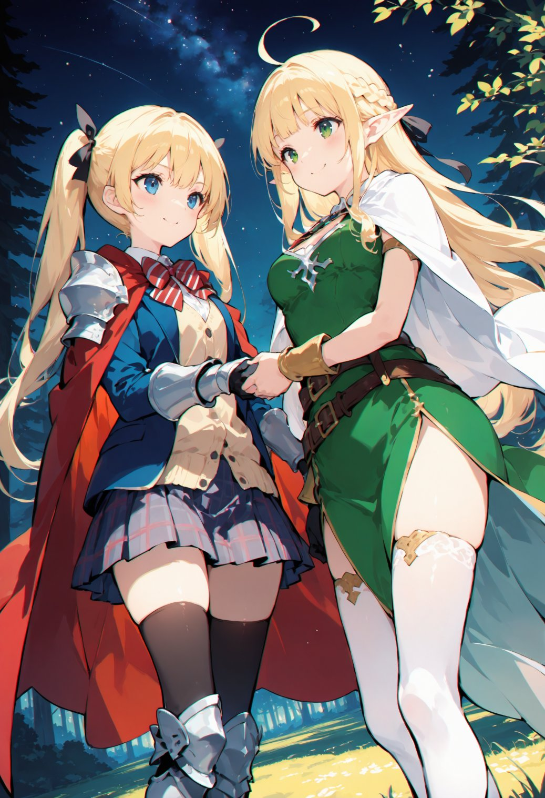

第13話
美桜ちゃんとリリアがムカデを討伐し、エルフの里に戻ると、村人たちは二人を温かく迎え入れた。 魔力が戻り、活気を取り戻した里には、感謝の言葉と笑顔があふれていた。 夜になると、村人たちは二人の功績を称えてささやかな宴を開いた。
宴が落ち着いた頃、美桜ちゃんとリリアは星空の下、静かな森の中で話をしていた。 焚き火の音が微かに聞こえる中、美桜ちゃんは次の目的地についてリリアに相談を持ちかけた。
「リリアちゃん、私ね……大魔導図書館に行かなきゃならないんだ。そこで元の世界に帰る方法を探すの。」 美桜ちゃんの瞳は決意に満ちていた。
リリアは少し驚いた様子を見せながらも、すぐに頷いた。 「大魔導図書館に行くなら、海を越えなきゃいけないね。そこに行くためには、まず港町に向かう必要があるよ。」
「海を越える……？」美桜ちゃんは目を丸くした。

「うん、大魔導図書館は海の向こう側にあるの。港町では船を手配できるし、旅人が多いから有益な情報も集まると思う。」 リリアは微笑みながら答えた。その言葉は、美桜ちゃんの冒険の次のステップをはっきりと示していた。
「なるほど！ありがとう、リリアちゃん！港町に行けばいいんだね！」 美桜ちゃんは手を握りしめ、次の旅への期待に胸を膨らませた。
翌朝、里を出発する美桜ちゃんを、リリアをはじめ村人たちが見送った。 見送りの列の先頭で、リリアが手を差し出す。
「ミオ、また会おうね！」 「うん！またね、リリアちゃん！」
二人は固い握手を交わした。 別れの寂しさを胸に抱きながらも、美桜ちゃんは笑顔で次の目的地へと旅立っていった。
― この話はここまで ―